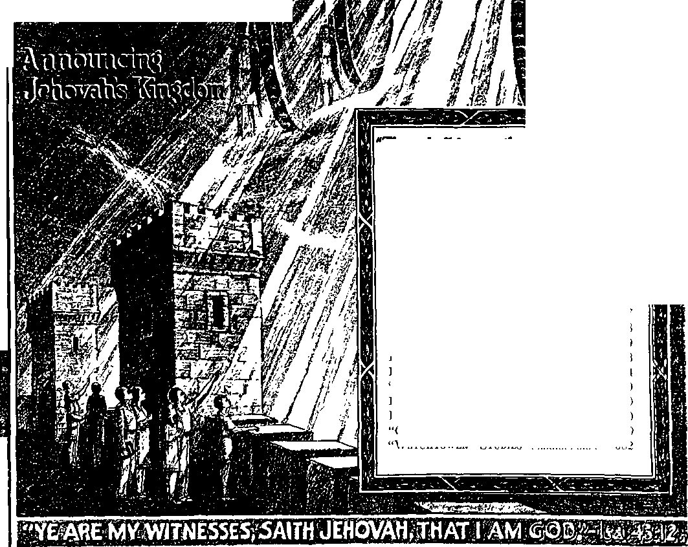

^ATCHLOVWERt
i-ji
371
Vol. LXII
DECEMBER 15, 1941
CONTENTS
-Ezekiel 35:15.
Semimonthly No 24
Demon Rule Ending (Part 7) .........
“Peace” .................................
Warnings..................
Final Warning................
Other Pictures .....................
Corroboration ..........................
Triumph for Theocracy..................
Field Experiences ............................
Index for 1941..............
“Great Multitude” Testimony Period
1942 Calendar ................
Re the 1942 Yearbook.....................
Consolation” ...........................
Watchtower” Studies ..................
378
379
383
384
370
370
370
370
382
Published Semimonthly By
WATCH TOWER BIBLE & TRACT SOCIETY
117 Adams Street • * Brooklyn, N.Y., U. S.A.
orrioiES
J. F. Rutherford, Prerident_______W. E. Van Amburgh, decretory
“And all thy children shall be taught of Jehovah; and great shall be the peace of thy children.” - Isaiah 54:I3-
THE SCRIPTURES CLEARLY TEACH
THAT JEHOVAH is the only true God, is from everlasting to everlasting, the Maker of heaven and earth and the Giver of life to his creatures; that the Logos was the beginning of his creation, and his active agent in the creation of all things; that the Logos Is now the Lord Jesus Christ in glory, clothed with all power in heaven and earth, and the Chief Executive Officer of Jehovah.
THAT GOD created the earth for man, created perfect man for the earth and placed him upon it; that man willfully disobeyed God’s law and was sentenced to death; that by reason of Adam’s wrong act all men are born sinners and without the right to life.
THAT JESUS was made human, and the man Jesus suffered death in order to produce the ransom or redemptive price for obedient ones of mankind; that God raised up Jesus divine and exalted him to heaven above every creature and above every name and clothed him with all power and authority.
THAT JEHOVAH’S ORGANIZATION Is a Theocracy called Zion, and that Christ Jesus is the Chief Officer thereof and is the rightful King of the world; that the anointed and faithful followers of Christ Jesus are children of Zion, members of Jehovah’s organization, and are his witnesses whose duty and privilege it is to testify to the supremacy of Jehovah, declare his purposes toward mankind as expressed in the Bible, and to bear the fruits of the kingdom before all who will hear.
THAT THE WORLD has ended, and the Lord Jesus Christ has been placed by Jehovah upon his throne of authority, has ousted Satan from heaven and is proceeding to the establishment of God’s kingdom on earth.
THAT THE RELIEF and blessings of the peoples of earth can come only by and through Jehovah's kingdom under Christ, which has now begun; that the Lord’s next great act is the destruction of Satan’s organization and the establishment of righteousness In the earth, and that under the kingdom the people of good will that survive Armageddon shall carry out the divine mandate to “fill the earth’’ with a righteous race.
ITS MISSION
JUS journal Is published for the purpose of enabling the people to know Jehovah God and his purposes as expressed in the Bible. It publishes Bible instruction specifically designed to aid Jehovah’s witnesses and all people of good wilL It arranges systematic Bible study for Its readers and the Society supplies other literature to aid in such studies. It publishes suitable material for radio broadcasting and for other means of public Instruction in the Scriptures.
It adheres strictly to the Bible as authority for Its utterances. It is entirely free and separate from all religion, parties, sects or other worldly organizations. It is wholly and without reservation for the kingdom of Jehovah God under Christ his beloved King. It is not dogmatic, but invites careful and critical examination of its contents in the light of the Scriptures. It does not indulge in controversy, and its columns are not open to personalities.
Yearly Subscription Price
United States, gl.OO; Canada and Miscellaneous Foreign, 31.60; Great Britain, Australasia, and South Africa, 6s. American remittances should be made by Postal or Express Money Order or by Bank Draft Canadian, British, South African and Australaalan remittances should bo made direct to the respective branch offices. Remittances from countries other than those mentioned may be made to the Brooklyn office, but by international Postal Money Order only.
Foreign Omers
British 34 Craven Terrace, London, W.2, Busland
Canadian______40 Irwin Avenue, Toronto 6, Ontario, Canada
Atutrolaria*7 Beresford Road, Strathfleld. N. S. W., Australia South African — Boston Bouse, Cape Town, South Africa
Please address the Society in every case.
(Translations of this Journal appear In several languages.)
All sincere students of the Bible who by reason of Infirmity, poverty or adversity are unable to pay the subscription price may bare The "Watchtower free upon written application to the publisher!, made once each year, stating the reason for so requesting IL We are glad to thus aid the needy, but the written application once each year la required by the postal regulations.
Bolles to Subscribers; Acknowledgment of a new or a renewal subscription will be sent only when requested. Change of addrpss, when requested, may be expected to appear on address label within one month. A renewal blank (carrying notice of expiration) wUI be sent with the journal one month before the subscription expires.
Entered a* seoond-olass matter at the poet office at Brooklyn, N. Y., under the Act of March S, lilt.
“GREAT MULTITUDE” TESTIMONY PERIOD
Regardless of the incoming of winter then, December marks another month-long season of special united activity known as “Great Multitude” Testimony Period. Those persons of good-will who shall form part of the “great multitude” of Armageddon survivors are now quickly coming forth ere the wintertime of Armageddon sets in on the world, and they will, in increasing numbers, take part with the remnant members in this united Testimony. All such are cordially invited to join in putting in as many homes as possible the excellent combination offer of the new book Children and the new booklet Comfort AU That Mourn, on a contribution of 25c. We shall be glad to give references to any wanting to get in touch with and to co-operate with the nearest organized company of publishers of The Theocracy. At the close of December the usual report on the full month’s activities and results should be submitted.
1942 CALENDAR
The text chosen for the year 1942, to wit, “Blameless in the day of our Lord” (1 Cor. 1: 8), provides the theme for a calendar picture which is most befitting these days of decision. Highly artistic and novel, the picture clearly and eloquently sets out the choice God’s covenant people must make earning the £reat issue of world domination. Beneath is a neat calendar pad, indicating the line of activity of Jehovah’s blameless ones for each month of 1942, naming the special Testimony Periods and also the special endeavors to be made during the intervening months. The contribution for this service calendar is 25c each, or $1.00 for 5 copies mailed together to one address. Companies should send in combination orders, with remittance to cover, through their local company servant.
RE THE 1942 YEARBOOK
Due to the uncertain and disrupted conditions on earth over which we have no control the information for the compilation of a report of the work world-wide for the service year 1940-1941 13 belated. Hence the production of the 1942 Yearbook of Jehovah’s witnesses has been unavoidably held up, till after the beginning of the new calendar year. Announcement of its publication will be made shortly, and which report, we believe, will be well worth waiting for.
“CONSOLATION”
Do you find enlightenment and joy in reading The Watch-towerf Then you are certain to find enjoyment and profit in reading its companion magazine, Consolation, put out by the same publishers. With many thousands Consolation serves a vital and (.Continued on page 38t)
Vol. LXII December 15, 1941 No. 24
PART 7
“And in the days of these kings shall the God of heaven set up a kingdom which shall never be destroyed; and the kingdom shall not be left to other people, but it shall break in pieces and consume all these kingdoms, and it shall stand for ever.”—Dan. 2: 44.
"JEHOVAH has declared his purpose to set up his I invincible and everlasting government, which is J The Theocracy, of Christ Jesus as King. His purpose stands and cannot be removed. (Isa. 55: 10,11; 46:11) Every person now in a covenant with Jehovah knows that the above statement is absolutely true. Every part of the prophecy which God caused Daniel to write down is in exact harmony and magnifies these facts, to wit: That Satan, the enemy, has for centuries ruled the world in wickedness, and that Jehovah will set up his great government to be administered by the righteous and beloved One, Christ Jesus, and that Jehovah’s government will literally and completely destroy Satan’s organization. Jehovah’s name will then be completely vindicated, and his glory shall fill the whole earth.
2 In the prophecy of Daniel 2: 31-45 description is given of a “great image”, which is a picture of Satan’s organization and the various elements thereof by which he has ruled the world. (See The Watchtower 1930, pages 227-233, 243-248, under the title “A Great Image”.) Because Lucifer in the beginning was clothed with authority by Jehovah God and thereafter became the wicked one, Satan, the head of that image picturing the Devil’s organization, is described as “gold”. “Silver” of the image was used to picture the princes of Satan’s organization that operate next to him, such as Gog, his field marshal. (Dan. 10:13,20; Ezek. 38:2,3) “Copper” of the image symbolizes the wicked angels or demons that operate by Satan’s direction, and which, as the prophecy states, “bear rule over all the earth.” Such are the demons now that have and exercise ruling power over the nations of the earth. Satan being the chief of demons, it is Satan, the princes and wicked angels that are meant by the term “demon rule or rulers”. It is against such demon powers that, as is stated in the Scriptures, the faithful supporters of The Theocracy war at the present time. (Eph. 6:12) Up to this point in the prophetic image that which is represented by the “gold”, “silver,” and “copper”, is invisible to human eyes; but that wicked organization has a visible part on earth that operates amongst men. In the great image that visible part is described in these words: “His legs of iron, his feet part of iron and part of clay.” (Dan. 2: 33) The legs and feet are always under, support and bear up and act under the direction of the head and other members of the body above the legs. The “head” pictures the real ruling power, while the “legs” picture the visible elements of the organization of Satan on earth, which operate and rule all the nations of the earth “at the time of the end”. They are the world powers embracing all those of the two kings, “the king of the north” and “the king of the south”. (Dan. 11: 40) There are three elements that operate together in carrying out the visible rule of the earth, to wit: political, commercial and religious; and as subsidiary to these and a part of them all is the military and strong-arm squad. The political or commercial elements are pictured by the iron legs and the iron that is in the feet. That which is pictured by the iron operates the military, which does the breaking. The feet of the image appear as “part of iron and part of clay”. Clay has the appearance of stone, and therefore in the picture it is a camouflage or fraudulent thing, because it claims to be stone, likened unto the Lord, but is not. (Isa. 28:16; 8:14) It is the means by which the people are deceived. The “clay” of the image pictures religion; which means is employed under the direction of the invisible demons, and deceives and entraps the people. The feet include the ten toes, which are a part of the feet, and which are pictured as iron smeared over with clay, that is, the religious element. “Ten” is a symbol of earthly completeness; and hence the ten toes picture or represent the complete list of all the nations of the earth which at “the time of the end” go totalitarian. Iron and clay have no real cleaving together; and therefore well symbolize that in due time there shall be a complete breaking up and separation of the political, commercial and religious elements. The prophecy makes it clear that the un-
derstanding of what this image represents “shall be in the latter days”. (Dan. 2: 28) That is the present time. All the prophecy of Daniel, therefore, now begins to clarify in the minds of those who love and serve Jehovah.
’ The text first above cited from Daniel 2:44 says: “And in the days of these kings.” What kings! The answer is, the combined ruling powers of the earth, all the kings of the earth, including both “the north" and “the south”, described in the eleventh chapter of the prophecy. At the time when these kings are ruling they announce their purpose to rule the earth, that is, to exercise world domination contrary to Jehovah God. They are therefore in complete opposition to The Theocracy. “In the days of these kings shall the God of heaven set up a kingdom.” What is that kingdom which the God of heaven sets up! It is The Theocratic Government, which is the government of Jehovah God by Christ Jesus, His King. Christ Jesus is now enthroned; hence The Theocracy has come; and all the kings of earth are arrayed against The Theocracy, and this will become more pronounced in the very near future. Will The Theocracy, Jehovah’s kingdom, be able to withstand the opposition of Satan’s organization! Concerning The Theocracy, his kingdom, Jehovah says: ‘Which shall never be destroyed.” It is the “everlasting kingdom”. (Dan. 7:27) It is invincible and shall stand forever.
4 Satan, the arch demon, has always operated his organization by wicked angels and demonized men, and always contrary to the will of God. Concerning The Theocracy Jehovah says: “And the kingdom shall not be left to other people.” No one in Satan’s crowd will have anything to do with that kingdom. The Theocracy shall be forever ruled from heaven by Christ Jesus; and those on earth who are representatives of that government will execute the judgments heretofore written. (Isa. 32:1) There will be no politics, commerce or religion in The Theocracy. How will The Theocracy affect the kingdoms of Satan’s organization! Of The Theocracy Jehovah says in this prophecy: “It shall break in pieces and consume all these kingdoms,” that is, the ruling powers of Satan. That means the end of demon rule for ever, because Jehovah says of The Theocracy: “And it shall stand for ever.” Return now to the consideration of the prophecy of Daniel as related to “the king of the north” and “the king of the south”, as set forth in the eleventh chapter of that prophecy.
5 As heretofore stated, after verse forty of that prophecy “the king of the south” disappears from the prophetic picture. Nowhere in the prophecy does it appear that “the king of the north”, that is, the “Axis powers”, shall be victorious in the present war between the two “kings”, nor does the prophecy indicate that “the king of the south” will suffer defeat in battle at the hands of “the king of the north”. “The king of the south" claims to be fighting for the survival of democracies. “The king of the south” suffers complete defeat so far as its announced purpose is concerned, and that defeat is not in battle with “the king of the north” by force of arms, but in this: All nations forming “the king of the south” become arbitrary and totalitarian; and the facts show that that is now practically accomplished. All these nations becoming totalitarian, the liberties of the people completely disappear, and the people are regimented and controlled in all matters. The nations composing “the king of the south" manifestly have reasoned that they must adopt the totalitarian system in order to successfully fight against the “Axis powers”. All admit that regardless of the result of the present war the nations will never return to the former method of rule. Thus it will be seen that Satan accomplishes his purpose to drive all nations into the dictatorial camp. As the visible world power began with Nimrod, the dictator of Babylon, which name stands for Satan’s “woman” or organization (Rev. 17:1-3), so in these last days the visible world powers have all become dictatorial under Satan’s organization, and hence all are properly called “Babylon the great” ; that is, nations composing the entire earthly organization. “And he cried mightily with a strong voice, saying, Babylon the great is fallen, is fallen, and is become the habitation of devils, and the hold of every foul spirit, and a cage of every unclean and hateful bird. For all nations have drunk of the wine of the wrath of her fornication, and the kings of the earth have committed fornication with her, and the merchants of the earth are waxed rich through the abundance of her delicacies.” (Rev. 18: 2, 3) Thus the Lord identifies those who are of “Babylon”.
“PEACE”
’ Will the present world conflict between the “Axis powers” and the so-called “democracies”, the opposers, end in a decisive victory for either side! The prophecy indicates the contrary result; and since we have no way of determining the future save by the prophecy of God, as set forth in the Bible, we know that that way is correct. All the prophecies and the present-day facts indicate that the contending nations will before long enter into some sort of peace treaty. It is quite manifest that the religious element of these belligerent nations now plays a double role, with the expectation of being the leader or chief element sitting at the peace conference or peace table. On September 4, 1941, while this was being written, the New York J ournal-American and other papers published the following pertinent statements, to wit: “Pope ready to sit at peace parley.” “Pope will seek a peace to last through the ages.” Tt is the constant hope and hourly prayer of Pope Pius XII, the leader of the Roman Catholic Christendom. ... He is considering offering the Vatican as the site of the peace conference. If there are objections or difficulties some other edifice might be offered. It is not beyond the realm of possibility that one of the Catholic cathedrals of even a United States city might be honored.’ Catholic priests at public functions recently have advocated that the pope should be the chief delegate at the peace conference. The president of the United States has recently sent again his personal ambassador to the Vatican. The purpose is obvious. As both sides, “the king of the north” and “the king of the south”, are working to the same end, world domination, both will see the necessity quite soon of making some arrangement, and it may be expected that the Roman Catholic Hierarchy will take a leading part in that peace conference.
7 From other scriptures it is certain that in the near future the religious element will take the lead in announcing to the world, to wit, “Peace and safety!” When the anticipated peace conference assembles, the Hierarchy of the Roman Catholic system will be prominent there and, being looked upon as the spiritual advisers of the nations, and being the demons’ chief instrument to hoodwink the people, will perform an important part in the conference. When the peace treaty is signed, the pope will receive the greatest amount of credit for having brought it about. That peace treaty is almost certain to proclaim what is now called “The New Order in Europe”, “The New League of Nations,” for which the pope has been praying. That will be the full consummation of ‘the abomination that maketh desolate standing where it ought not to stand’, claiming the right and authority of world dominion qy world domination. (Mark 13:14) Then all the nations of earth will be under the “beast”, that is, that totalitarian monstrosity that arbitrarily rules, and all the people will be required to hail the “beast”. Upon the back of the “beast”, symbolically speaking, the religious element, the leader, will ride. (Rev. 17: 3-7) Then the proclamation of world peace by that combined ruling power, particularly the religious element, will be made. That peace will be of very brief duration, as the Scriptures indicate: “For when they shall say, Peace and safety; then sudden destruction cometh upon them, as travail upon a woman with child; and they shall not escape.” (1 Thess. 5:3) Relating to this same time, the prophecy of Daniel says:
8 “But tidings out of the east and out of the north shall trouble him; therefore he shall go forth with great fury to destroy, and utterly to make away many.”—Dan. 11:44.
8 The “tidings”, or “reports”, which the prophecy says come from the east and the north, not only trouble the “Axis powers”, but greatly disturb all that form a part of the totalitarian rule of the earth and of all the people who put their faith in that totalitarian ruling power of the earth. It therefore appears that this part of the prophecy has not yet had complete fulfillment, but that it is in course of fulfillment, and this, in the light of other prophecy, seems to clearly indicate what will be the result. First let “the east” and “the north”, from whence come the disturbing reports, be identified.
10 “The north,” named in this part of the prophecy, refers to the position of Almighty God, Jehovah, and this is definitely, made to appear from the Scriptures. Zion, Jehovah’s capital organization, is the place of his habitation and which is described in the Scriptures as “on the sides of the north”. “For the Lord hath chosen Zion; he hath desired it for his habitation. This is my rest for ever: here will I dwell; for I have desired it.” (Ps. 132:13,14) “Beautiful for situation, the joy of the whole [new] earth, is mount Zion, on the sides of the north, the city of the great King.”—Ps. 48: 2.
11 The Beloved Son of Jehovah, Christ Jesus, is the King of The Theocratic Government, which Jehovah God has created, raised up, and put in operation to rule the world in righteousness. It is from the throne of Jehovah that The Theocratic Government has come forth to carry out his purpose. Therefore Jehovah says, as is set down in the prophecy: “I have raised up one from the north, and he shall come: from the rising of the sun shall he call upon my name; and he shall come upon princes as upon morter, and as the potter treadeth clay.” (Isa. 41: 25) This scripture also identifies Christ Jesus as the One referred to by the word “east”, or “the sunrising”.
12 Jehovah God is the great Judge, the Supreme Judge, and He has appointed Christ Jesus to judge the world and has given him power to execute all judgment. Note, therefore, that Jehovah says of himself and of Christ Jesus: “Let us come near together to judgment. Who raised up the righteous man [Christ Jesus, the Sun of righteousness, before whom all the nations are assembled] from the east, called him to his foot, gave the nations before him [see Psalm 2:6-9], and made him rule over kings! He [Christ Jesus, the King and Judge upon his throne] gave them as the dust to his sword, and as driven stubble to his bow. He pursued them, and passed safely; even by the way that he had not gone with his feet. Who hath wrought and done it, calling the generations from the beginning! I the Lord, the first, and with the last; I am he.”—Isa. 41:1-4.
18 Throughout the prophetic Scriptures the term “beast” is used to denote government. Jehovah gave his word that he would raise up a righteous government that would destroy all unrighteousness, that is to say, Satan’s entire organization and power. That righteous government has for its King Christ Jesus, and the Scriptures describe Christ Jesus as coming from the east or sunrising. Jehovah’s purpose cannot be revoked or set aside; hence we know that Jehovah, having announced his purpose, is certain to perform it; and concerning this he says: “Remember the former things of old: for I am God, and there is none else; I am God, and there is none like me. Declaring the end from the beginning, and from ancient times the things that are not yet done, saying, My counsel shall stand, and I will do all my pleasure; calling a ravenous bird from the east, the man that executeth my counsel from a far country; yea, I have spoken it, I will also bring it to pass; I have purposed it, I will also do it.”—Isa. 46: 9-11.
14 It is Jehovah, the Almighty God, who promotes the righteous and brings to destruction the wicked. Note that in Psalm 75 is written this proof: “For promotion cometh neither from the east, nor from the west, nor from the south: but God [in Zion; his throne is on the side of the north] is the judge; he putteth down one, and setteth up another.”—Ps. 75:6,7.
15 Lucifer was a bright and shining one in Jehovah’s organization at one time, before he rebelled. He recognized “the north” as the place of highest authority, therefore the seat of Jehovah God. With wicked covetousness in his heart Lueifer, thereafter known as Satan, said: “For thou hast said in thine heart, I will ascend into heaven, I will exalt my throne above the stars of God; I will sit also upon the mount of the congregation, in the sides of the north: I will ascend above the heights of the clouds; I will be like the Most High.”—Isa. 14:12-14.
16 When Satan put forth his totalitarian rule with Nimrod in the saddle that organization took the name "the king of the north”, and a like organization has borne the name since, manifestly because always in opposition to The Theocracy. The organization designated “the king of the south” served to hold in line the peoples who desired freedom of selfgovernment. Now in these last days “the king of the south” has fallen completely under demon rule and all nations have become totalitarian, all of the contending factions fighting for world domination, and all against Jehovah and his King. The tidings or reports that “trouble him”, as stated in Daniel 11: 44, could not possibly come from “the king of the south” or any other earthly organization. Both the “kings” are totalitarian, and are from this point on pictured as one.
” From whence do the troublesome “reports” come! Manifestly those reports or tidings come from Jehovah and Christ Jesus. Whatever those reports are, they greatly disturb the totalitarian earthly organization. Christ Jesus was prefigured by Cyrus of Persia, whereas Jehovah, the Almighty God, was prefigured by Darius the Mede, of Medo-Persia. It is the Almighty God, Jehovah, and Christ Jesus as King that sent forth the message which troubles the enemy. Those tidings constitute a warning from Jehovah that Armageddon is about to be fought. The Devil knows this, and his cohorts are made to know it.
WARNINGS
18 It was in 1927 that the Lord by his sixth angel poured out his “vial” upon the great river Euphrates, “that the way of the kings of the east [kings who are from the Sun-rising (Diaglott)] might be prepared.” (Rev. 16:12; also see Light, Book One, page 160; Book Two, page 36) “The kings of the east [or, sunrising]” here mentioned are Christ Jesus and the glorified, resurrected members of his body, and are the same as that mentioned by Daniel as “out of the east”. (Dan. 11:44) That message poured out, above mentioned, was a warning, and it was poured out upon the peoples, represented by the river Euphrates, and was there referring to Satan’s organization, and particularly the religious element thereof. Satan knew then that his time is short, and prepared for the final showdown; and therefore he and his horde of demons, and demon-controlled representatives on earth, busy themselves to prepare for Armageddon; and concerning this it is written, in Revelation 16:13,14,16: “And I saw three unclean spirits like frogs come out of the mouth of the dragon, and out of the mouth of the beast, and out of the mouth of the false prophet. For they are the spirits of devils, working miracles, which go forth unto the kings of the earth and of the whole world, to gather them to the battle of that great day of God Almighty. And he gathered them together into a place called in the Hebrew tongue Armageddon."
’’Since the coming of Christ Jesus to the temple his faithful servants have been sent forth by him to offer “an offering in righteousness”, and by this they have been used to sound out the message of warning of the approaching wrath of God, that is, the battle of Armageddon. A great educational campaign by Jehovah’s witnesses, under the direction of the Lord, has been carried on to serve such warning to the people and to the rulers; but how much heed has been given to such warnings it is not possible for anyone to now tell. Such warnings have been repeatedly sounded during the past ten years. At Columbus, Ohio, convention in 1937 the slogan of Jehovah’s servants at that time was taken from Obadiah 1, and was heralded throughout the land, to wit: “Thus saith the Lord God concerning Edom [religionists, whom ‘the king of the north’ does not touch], We have heard a rumour from the Lord, and an ambassador is sent among the heathen [nations], Arise ye, and let us rise up against her in battle.” These warnings have been very shocking to the religious susceptibilities of the great religious institutions, but the Roman Catholic religious system, led by the Hierarchy, continue to say: “When the overflowing scourge shall pass through, it shall not come [nigh] unto us” (Isa. 28:15); thus indicating that even though the warning has disturbed them and frightened them they do not believe what the warning contains. A warning specifically directed to the dictator of Germany was sounded by Jehovah’s servants March 25, 1934, and another on October 7, 1934. The dictator may have been disturbed, but he gave no outward evidence of giving heed thereto.
20 From London, in the message “Face the Facts”, delivered September 11, 1938, a warning was specifically given to the Roman Catholic Hierarchy and to the dictatorial government, the totalitarian monstrosity, “the king of the north.” At that same time the slogan was proclaimed, “Religion is a snare and a racket.” June 25, 1939, from Madison Square Garden, New York, again the warning was sounded, and particularly to the religious and totalitarian elements. It appears that such warning angered the religionists and allies forming the totalitarian ruling pow’er. The message set out in the books Enemies and Religion contained warnings to the religious, political and commercial combine that now rule the earth contrary to God’s will. Such warnings have been sounded by Jehovah’s witnesses and companions, and, without doubt, under the direction of the Lord, but the totalitarian combine still regards Jehovah’s witnesses as a sect of religionists, which will soon pass out. These witnesses, like a swarm of locusts, worry the would-be rulers and allies; but none of these appear to be the “tidings out of the east and out of the north”, mentioned by Daniel, that trouble the totalitarian rulers and allies.—Dan. 11: 44.
FINAL WARNING
21 It appears that the totalitarian combine are not convinced that the warning sounded by Jehovah’s witnesses emanates from the Lord; but mark this: Jehovah caused his prophet Ezekiel to record in sixty-four different places and times in that prophecy this statement concerning the totalitarian combine : “And ye shall know that I am the Lord that smiteth.” (Ezek. 7: 9) (See Vindication, Book Three, under index referring to “They shall know the Lord”.) “The end [that is, the final end] shall be at the time appointed”; and it appears from the prophecy that just preceding the final end the Lord sends forth tidings, or reports, that constitute such a forcible warning that the crowd that has set up the “abomination of desolation” will be compelled to give heed to it, and that warning not only will trouble them but will frighten them beyond description. Says the Lord: “An end, the end is come upon the four corners of the land. Now is the end come upon thee, and I will send mine anger upon thee, and will judye thee according to thy ways, and will recompense upon thee all thine abominations. And mine eye shall not spare thee, neither will I have pity; but I will recompense thy ways upon thee, and thine abominations shall be in the midst of thee; and ye shall know that I am the Lord.”—Ezek. 7:1-4.
12 Just how and when the final warning will be given by the Lord no man can now tell, but it seems reasonable that the Lord will use his faithful covenant people that are on the earth to have some part in sounding that final warning. That warning will be so absolutely emphatic that all the nations of the earth will know it. It seems that such warning must be sounded shortly after the “Peace and safety” proclamation is made known by the ‘desolating abomination’ crowd. The words here appear appropriate to him, the totalitarian “beast”: “Let not his hoar head go down to the grave in peace.” (1 Ki. 2:6) The Lord’s warning will trouble the head of every one who has to do with the ‘desolating abomination’. —Ps. 110:6.
2S For some time God’s “strange work” has been in progress, and it appears that the same is now about done and, when it is done, Jehovah’s “strange act” takes place. The “strange work” has been a warning to all, and particularly to those who insist on exercising world domination in defiance of Jehovah and his Theocratic Government. Those repeated warnings the totalitarian rulers and all who are bent upon world domination have scorned. To such Jehovah says: ‘Wait until the day when I rise up to the prey’; that is, until the hour when the Lord begins the execution of his “strange act”. It seems that just then, after the Lord does rise up, he will give such an emphatic warning that the combined rulers that form the ‘desolating abomination’ will be compelled to hear and to give heed and it will cause them to tremble in their boots. And what will be the final effect of that emphatic warning from the Lord? and what will the totalitarian rulers do?
24 “He [totalitarian rulers] shall go forth with great fury to destroy, and utterly to make away many,” says the prophecy of Daniel. (11: 44) By the time that “Peace and safety” proclamation is announced the totalitarian, demonized rulers will conclude that everything on the earth is well in hand, and that Jehovah’s witnesses and companions are safely tucked away. But when the emphatic message is heard by them from ‘the north and the east’, that is, from Jehovah and Christ Jesus, the demonized ruling elements will conclude that they must completely rid the earth of Jehovah’s witnesses. All others of the earth are under control; hence it is Jehovah’s servants that are marked for utter destruction according to the prophecy.
55 The question at issue is: The Theocracy against the 'desolating abomination’, Who shall rule! All nations are now against The Theocracy. Only the remnant and their companions advocate The Theocracy and proclaim it to the people. Following the totalitarian announcement of “Peace and safety”, and when the remnant and ever-increasing number of the “other sheep” of the Lord vociferously hail The Theocracy and its King, that may be the signal for the demonized rulers to go forth with great heat, maliciously determined to wipe out all advocates of the Theocratic Government. Shall that heated fury of the combined demonized rulers frighten Jehovah’s covenant people and cause them to yield! or will they hold fast their integrity! Jehovah speaks to his covenant people in this connection: “I, even I, am he that comforteth you; who art thou, that thou shouldest be afraid of a man that shall die, and of the son of man which shall be made as grass; and forgettest the Lord thy maker, that hath stretched forth the heavens, and laid the foundations of the earth!” —Isa. 51:12,13.
26 The faithful will stand still and see the power of Almighty God by Christ Jesus exercised in their behalf and for their salvation. The true servants of The Theocracy will hold fast their integrity. Such is the crucial testing time and, like the faithful men of old, the faithful of the present time will stand firm and unmovable and blameless before the Lord.
2 T To his faithful servants Jehovah speaks: “Out of the north an evil shall break forth upon all the inhabitants of the land. And I will utter my judgments against them, touching all their wickedness, who have forsaken me, and have burned incense unto other gods, and worshipped the works of their own hands.” (Jer. 1:14,16) “And I looked, and behold, a whirlwind came out of the north, a great cloud, and a fire infolding itself, and a brightness was about it, and out of the midst thereof as the colour of amber, out of the midst of the fire.”—Ezek. 1:4.
28 It is Christ Jesus, the glorious King of The Theocracy, that executes Jehovah’s judgment upon the enemy. Thus the disturbing “tidings” and the destruction upon demonized rulers come from the north and from the east. (Ezek. 43: 2, 3) The last desperate effort put forth by the demonized rulers, the combined totalitarian dictators, to destroy The Theocracy and to rule the earth contrary to God’s purpose will be put forth. Will that effort of the totalitarians succeed!
29 “And he shall plant the tabernacles of his palace between the seas in the glorious holy mountain; yet he shall come to his end, and none shall help him.” —Dan. 11: 45.
*° The demonized rulers, determined to “stay put” and to control the earth, “plant” their tents between “the seas” (that is, the people in general) and those who are wholly devoted to The Theocracy, and which latter are described in the prophecy as “the glorious holy mountain”. {Young’s) It is that glorious holy mountain, or kingdom, which shall be exalted above all things of the earth. (Isa. 2:2,3) That glorious mountain is The Theocracy, including the remnant on the earth at the time of Armageddon. Having been alienated from God by reason of the hypocrisy and influence of religionists, the people in general which bear up and support the totalitarian, ruling power are designated as “the seas”. It appears that in the last desperate stand the religionists, or demonized rulers, will attempt to prevent any and all in the “seas” from coming forth and fleeing to the “glorious holy mountain”, which is The Theocratic Government. It may be that at this point the Lord will open the eyes of multitudes, who will escape and find refuge under The Theocracy. The enemy, the totalitarians, will fight desperately and furiously, but ‘he shall find no help’.
81 That battle of the great day of God Almighty will bring the demons’ rule to its final end. That battle is not to be fought between “the king of the north” and “the king of the south”, because at that time all nations will be absorbed into the demoncontrolled totalitarian rule. The great and final fight is the battle of Armageddon, in which Christ Jesus, the glorious King, makes war upon all the forces of Satan, both visible and invisible. The totalitarians’ structure is what is now called “the new World Order”, “the new League of Nations”; and those rulers expect it to endure forever. The Roman Catholic Hierarchy claims that it is founded on the rock and beyond the reach of the gates of hell. (Matt. 16:18) But let those who have faith in God be assured that all the plantings of the demon-controlled world, including religion, politics and commerce, have been done contrary to Jehovah’s will, and without his approval, and concerning which Jesus says: “Every plant which my heavenly Father hath not planted, shall be rooted up.” (Matt. 15:13) That totalitarian, demon rule is the house of the wicked one, and at the battle of Armageddon shall suffer complete destruction, while The Theocracy shall endure forever: “The house of the wicked shall be overthrown; but the tabernacle of the upright shall flourish.” (Prov. 14:11) Desperately shall the wicked fight for existence.
82 “Yet he [demonized ruling powers of the earth] shall come to his end, and none shall help him.” All the commercial powers of the earth, including the wealth of the Vatican, will be of no help against the forces of The King of The Theocracy: “For the Egyptians shall help in vain, and to no purpose; therefore have I cried concerning this, Their strength is to sit still.” (Isa. 30:7) “Now the Egyptians are men, and not God; and their horses flesh, and not spirit. When the Lord shall stretch out his hand, both he that helpeth shall fall, and he that is holpen shall fall down, and they all shall fail together.” (Isa. 31:3) “And they shall know that I am the Lord, when I have set a fire in Egypt, and when all her helpers shall be destroyed.”—Ezek. 30: 8.
33 The Devil, the chief of demons, and all of his demon forces shall be of no help in that great fight. It is the time when Jehovah shows his supreme power, as he promised (Ex. 9:16); and that power nothing can resist. Thus the end for ever of Nazi-Fascist-Hierarchy rule will come, and that will mark the end for ever of demon rule.
34 It is in the days of these dictatorial powers that oppress the people and persecute all who serve The Theocracy, all of these kings of the earth described by Daniel’s prophecy, that the God of heaven will bring into action his kingdom, which he has builded up, that blessed kingdom, The Theocracy. All who serve under that kingdom must be righteous; therefore none of the worldly crowd now known shall have any part in it. The Theocracy is the everlasting kingdom. Christ Jesus the King is pictured in Daniel’s prophecy (chapter two) as a “stone . . . cut out” of Jehovah’s universal organization, which destroys all demon rule and every vestige thereof. That glorious Theocracy shall “break in pieces and consume all these [demonized] kingdoms, and it shall stand for ever”.—Dan. 2:44,45.
other pictures
35 Further confirming the conclusion that neither “the king of the north” nor “the king of the south” will win a decisive victory in the conflict now raging between them for world domination, take note of the prophetic picture set forth at Revelation 19:19, to wit: “And I saw the beast, and the kings of the earth, and their armies, gathered together to make war against him that sat on the horse, and against his army.”
33 This pictures all the forces of demon rule in battle array against the King of The Theocracy. The “beast” there mentioned symbolizes the demonized rule of the earth, represented particularly in the “Axis powers”, and which will include all the kings and nations of the earth finally. The “false prophet” there mentioned particularly pictures the nations that claim to be fighting for democracy in proclaiming the rights of the people, but which in fact contend for world domination for selfish reasons. Therefore it appears that at the battle of Armageddon both “the king of the north” and “the king of the south” will be living, going concerns, and active and, while thus living, will be destroyed by The King of The Theocracy, as stated, to wit: “And the beast was taken, and with him the false prophet that wrought miracles before him, with which he deceived them that had received the mark of the beast, and them that worshipped his image. These both were cast alive into a lake of fire burning with brimstone.” (Rev. 19:20) This is another picture marking the end of demonized rule.
3T All prophecies of God set down in the Scriptures are in exact harmony and entirely consistent. Each one makes known the development of some part of Jehovah’s purpose. The meaning of these prophecies the Lord reveals to his faithful people in his own due time and for their aid and comfort. Another prophecy disclosing the end of demon rule is that set down at 2 Chronicles 20th chapter. That prophecy is considered in detail in The Watchtower of July 1 and 15, 1938. Briefly attention is here directed to it.
33 Jehoshaphat, whose name means “Jehovah Vindicated”, was the king of Israel, the typical covenant people of .Jehovah. As king he prefigured Christ Jesus, the King of The Theocracy, who is the vindicator of Jehovah’s name. The nations Ammon, Moab and Mount Seir, in the order named, pictured the political, commercial and religious elements that form the visible governing powers of the dictatorial or totalitarian state. Those three nations conspired together to bring about the destruction of Jehovah's typical people, and with that malicious purpose they marched into the land of Palestine to make their destructive attack. The Israelites were entirely unable to repel that attack alone, even as the representatives of The Theocracy now on earth could not possibly repel the attack of the totalitarian powers. God, through his prophet, sent a message to the Israelites, to wit: ‘Be not afraid by reason of this great multitude; the battle is not yours, but God's.’ A like situation obtains at Armageddon. The Israelites marched in force to meet the enemy, singing as they went the praises of Jehovah. Then the Lord set an ambushment against the enemy, and they were smitten. Ammon and Moab destroyed first those of Mount Seir, and then destroyed each other. The Israelites struck not a blow, but they saw the work of the Lord, and returned with songs of praise to his name.
’’ The antitypical monstrosity pictured by Ammon, Moab and Mount Seir is the totalitarian combine now insisting upon world domination. As to the time of the complete fulfillment of this part of the prophecy, it appears that all the nations, which will have gone totalitarian, will at the time be at peace, apparently. They will all be engaged in the same thing. The cry by them, “Peace and safety!” will be made. As Daniel
says, they then hear the tidings from God and Christ, or “the north” and “the east”, that give them great trouble, and their combined forces march out to destroy all that stand for The Theocracy. Jehovah gives the command, and Christ Jesus, the King, with his host of heaven, moves into action. The battle of the great day of God Almighty is on! The result is the destruction of demonized rule, particularly of icligion first, after which follows the destruction of all other elements that oppose and fight against The Theocracy.
CORROBORATION
40 The Lord Jesus Christ uttered the great prophecy of Revelation. Attention is here directed to the seventeenth chapter, which discloses the end of religion, and the chapter that follows shows the complete destruction of all who oppose The Theocracy. Students of divine prophecy know that Revelation is written in symbols. Satan’s organization, in the seventeenth chapter, is pictured by a woman and designated in that prophecy “Mystery, Babylon the Great, the Mother of Harlots and Abominations of the Earth”. She gives birth to the totalitarian monster as well as to all other wicked organizations. “Beast,” in the prophecy, symbolically stands for visible ruling powers that attempt to gain world domination and which at times rule. (Rev. 17:8) That “beast” of verse eight appeared in the form of the League of Nations, and which has now been succeeded by or shortly will be completely succeeded by all the nations of earth gone totalitarian. The woman, described in the prophecy as riding on the back of the beast, stands for the Roman Catholic Hierarchy, the chief religious system or abomination that dominates the earth, and all other religions that join with her. She is described in the prophecy as the “whore” because of her hypocritical claim to represent the Lord God and Christ and at the same time mixing up with and forming a part of Satan’s organization. (Rev. 17:1,2) (See James 4:4.) “Ten” is a number symbolic of earthly completeness; and therefore the “ten horns” or “kings” mentioned in the prophecy stand for all the nations of the earth, which nations at the time of the end become totalitarian. All of these, therefore, give their power and strength to the “beast”, that is to say, to the totalitarian system of rule, the beastly, demon dominating power. 'All these have one mind’ (Rev. 17:13); that is to say, all have one purpose and are using their means to fight against The Theocracy and to destroy all who advocate The Theocratic Government. “The Lamb” is Christ Jesus, the King of The Theocracy, and all who are with him support The Theocracy: “These [all the totalitarian nations] shall make war with the Lamb, and the Lamb shall overcome them; for he is Lord of lords, and King of kings; and they that are with him are called, and chosen, and faithful.”—Rev. 17:14.
41 This prophecy of Revelation then identifies “the waters . . . where the whore sitteth” as the peoples of the earth, which Daniel describes as “the sea” and which “the whore” attempts to keep away from The Theocracy. That same Devil system pictured by the woman “reigneth over the kings of the earth”. (Rev. 17:15,18) The prophecy describes what follows, and which description is in exact harmony with 2 Chronicles 20th chapter. The “ten horns” (the political and commercial elements of the totalitarian rule) seeing that the religious element of that combine is a fraud and a snare and that they have been duped, God puts it in their hearts to fulfill his will. (Rev. 17:16,17) They turn against the religious element and, like a great scourge, destroy her, even as Jehovah, by his prophet, elsewhere describes, to wit: “And your covenant with death shall be disannulled, and your agreement with hell shall not stand; when the overflowing scourge shall pass through, then ye shall be trodden down by it.” (Isa. 28: 18) Thus Jehovah God makes known to his faithful servants his purpose to destroy every vestige of Satanic rule.
41 Those who love the great Theocrat and his King now see why these prophecies were written long ago and why the meaning thereof is now revealed. The great Jehovah from the beginning knew the trying and testing times that would come to his covenant people at the end, and therefore he caused to be written all these prophecies, and concerning which his faithful apostle says: “For whatsoever things were written aforetime were written for our learning, that we through patience and comfort of the scriptures might have hope.”—Rom. 15: 4.
48 Jehovah’s servants are now facing a crucial test. They must hold fast their integrity, if they are to receive protection and life and for ever enjoy the blessings of The Theocratic Government. The Lord caused his faithful apostle long ago to write a message to those servants of God who should be on the earth at the time of the end. God’s people are there informed that they must now be at complete unity and all of one mind, that is, all completely for The Theocracy. Hence this message to them: “So that ye come behind in no gift; waiting for the coming of our Lord Jesus Christ; who shall also confirm you unto the end, that ye may be BLAMELESS IN THE DAY OF OUR LORD Jesus Christ. God is faithful, by whom ye were called unto the fellowship of his Son Jesus Christ our Lord. Now I beseech you, brethren, by the name of our Lord Jesus Christ, that ye all speak the same thing, and that there be no divisions among you; but that ye be perfectly joined together in the same mind, and in the same judgment.” —1 Cor. 1: 7-10.
“ STAND FAST FOR THE THEOCRACY! It will be folly to now turn to the beggarly totalitarian ruling elements. Give ear always to what the Lord says: “I will hear what God the Lord will speak; for he will speak peace unto his people, and to his saints; but let them not turn again to folly.” (Ps. 85: 8) “The Lord will give strength unto his people; the Lord will bless his people with peace.”—Ps. 29:11.
END
TIE great Theocrat created man in his own image and put him on the earth. He put man in the garden of Eden to dress and keep it. (Note Genesis 1:28 and 2:15.) God thereby made the perfect man a part of his great universal organization and commanded that man should remain always in harmony with his Creator and his fixed laws. That there are various divisions of God’s universal organization is certain from the Scriptures.
The beginning of God’s creation was his beloved Son, called “The Logos” or “The Word”, and thereafter all things created were created by The Logos as the deputy of Jehovah God. (Rev. 3:14; Col. 1:15; John 1: 1-3) “By him were all things created, that are in heaven, and that are in earth, visible and invisible, whether they be thrones, or dominions, or principalities, or powers: all things were created by him, and for him: and he is before all things, and by him all things consist. And he is the head of the body, the church: who is the beginning, the first born from the dead; that in all things he might have the pre-eminence. For it pleased the Father [Jehovah] that in him [Christ Jesus] should all fulness dwell.”—Col. 1:16-19.
This establishes beyond a question of doubt that in God’s organization there are thrones, dominions, principalities, angels and servants. One of the titles given to the mighty chief deputy of Jehovah is “The bright and morning star” (Rev. 22:16), which title “star” also means prince. (Num. 24:17) There was another “star” in God’s universal organization. At Job 38:7 it is recorded that when God laid the foundation of the earth as a home for man “the morning stars sang together, and all the sons of God shouted for joy”. That other “star”, or prince, was the spirit creature Lucifer.
Lucifer was appointed to a high office in God's organization. To him it is said, at Ezekiel 28:14: “Thou art the anointed cherub that covereth; and I have set thee so; thou wast upon the holy mountain of God; thou hast walked up and down in the midst of the stones of fire.” “Anointed” means that he was designated to fill a certain office. The word “covereth” applies to one who provides protection, defense or supervision as an overseer. Lucifer was in Eden, the garden of God, where Adam was put, and, Lucifer being made an officer in Jehovah’s organization, it seems clear that man was under the special supervision of Lucifer and the perfect man was therefore a part of Lucifer’s subordinate organization and hence in the great organization of Jehovah. Since Ezekiel’s prophecy, chapter one, shows that God’s organization is like a wheel within a wheel, then it may well be said that Lucifer’s part of the organization was one of the wheels in the greater wheel. This, of course, applies when he was in harmony with Jehovah. Lucifer was made glorious and beautiful to look upon when he appeared in Eden, as shown at Ezekiel 28:13: “Thou hast been in Eden the garden of God; every precious stone was thy covering, the sardius, topaz, and the diamond, the beryl, the onyx, and the jasper, the sapphire, the emerald, and the carbuncle, and gold: the workmanship of thy tabrets and of thy pipes was prepared in thee in the day that thou wast created.” He was therefore a light-bearer and clothed with power and authority.
God created the beasts of the field and the fowls of the air and brought them before Adam and caused him to give each one a name, and they were subject to Adam. (See Genesis 1:28; 2:19,20.) Since Lucifer was invisible overlord of Adam, it follows that all these beasts of the field and fowls of the air were under his superior supervision.
Lucifer was undoubtedly the most beautiful in appearance of all creatures in his immediate organization which God had provided for Lucifer. He had much, but he coveted more, and by reason thereof he became the great enemy of God. (Jer. 51:13) Being made perfect and beautiful and being given a commission of great authority he was dutybound to be wholly loyal to God. Lucifer became lawless, and from that time he was God’s enemy : “Thou wast perfect in thy ways from the day that thou wast created, till iniquity was found in thee.” (Ezek. 28: 15) “Iniquity” means lawlessness or that which is contrary to law. From that day until now Lucifer has been interfering with God’s organization, and, at Matthew 13:25-30, 39, Jesus is authority for the statement that that one is the enemy.
When Lucifer rebelled against God and started on his course of lawlessness or wickedness God changed Lucifer’s name, or gave him different names, and one of these names is Satan, which means opposer or adversary. This signifies he is the enemy of God and that he resists everything that God does.
Concerning Lucifer it is written: “0 Lucifer, son of the morning, . . thou hast said in thine heart, I will ascend into heaven, I will exalt my throne above the stars of God I will sit also upon the mount of the congregation, in the sides of the north: I will ascend above the heights of the clouds: I will be like the Most High.” (Isa 14.12-14) That he carried out his covetous desire expressed in these words is true beyond any question of doubt. Having an organization, he determined to turn the entire thing against God, or in opposition to God, and to set up a throne in the mount (or organization) of the congregation (or assembly) of God’s creation in the sides of the north (in the position occupied by Jehovah). Therefore he said: “I will be like the Most High.” God had given Lucifer an organization which this one, as Satan, now proceeds to use and to make as nearly like Jehovah’s organization as possible and yet use it for his own selfish and wicked purposes in opposing Jehovah. Jehovah God permitted him to take his own wicked course and bides His own good time when, as He states, ‘Lucifer shall be brought down to hell, to the sides of the pit.’—Isa. 14:12,15.
Satan called his visible organization on earth Bab-il, meaning “the gate to god”. Doubtless his purpose was to have it understood that through his organization is the way to come to him to worship, even as the way to God is through His organization. Without a question of doubt Satan is the “god of this world”. (2 Cor. 4:3,4) Bab-il, or Babylon, is the name of Satan’s “woman”, who symbolizes his organization. Jehovah named the wicked organization “Ba-bel”, which means confusion.—Gen. 11: 9.
The beginning of the earthly part of Satan’s organization was under “the mighty hunter”, Nimrod, and to the city organized under him was given the name Babylon, which is the name of Satan’s “woman” (his organization). Although the first kingdom to be organized, Babylon was the third in order as a world power. As world powers Egypt and Assyria preceded Babylon. Daniel the prophet was a Jewish captive in Babylon in the days of Nebuchadnezzar the king. Being king of Babylon at the time of his dream concerning the terrible metallic image and the stone which destroyed it, Nebuchadnezzar pictured Satan, the real and invisible head of the organization.
The description of that image, in Daniel’s prophecy chapter two, mentions three precious metals, to wit, gold, silver, and copper (called “brass” by a mistranslation). It mentions one base metal, iron. The meaning of these metals is significant, otherwise the Lord would not have them in his Word in connection with this image. At Genesis 2:11,12, gold is first mentioned in the Bible as being in the land of Havilah, which land was watered by one of the heads of the rivers that flowed out of Eden. In the sacred tabernacle and in the temple of the Jews the Most Holy was overlaid with fine gold, and the cherubs in the Most Holy were made of gold. (See Exodus 25:17-19; 1 Kings 6:22-28.) The tabernacle and the temple pictured God’s organization. Gold is symbolic of things divine. The saints of Zion are “comparable to fine gold”.—Lam. 4: 2.
Silver is a precious metal and was used in connection with the tabernacle and temple service. (Ex. 26:19) The platters, bowls and other utensils used in that service were made of silver. (Num. 7:13; 1 Chron. 28:17) Silver is next in order in value as compared with gold, but, of course, of less value than gold. It is mentioned as second in the terrible image of Nebuchadnezzar’s dream.
Copper is another precious metal, but of less value than silver. The word “brass”, as appearing in the Authorized Version Bible, is a mistranslation, and should be “copper”; brass, as is well known, is a combination of metals. Copper also was used in connection with the tabernacle and temple. (Ex. 38: 3) Gold, silver and copper are classed as “noble” metals and have their relative value as in the order named. The description of Lucifer when he was in Eden, as given at Ezekiel 28:13, shows he was covered with gold and precious stones which God gave to him when he was created or when installed in office.
In Daniel 2: 31, 32 the statement is made that the image seen in the dream was of excellent brightness, great and terrible, and that the head was of fine gold, the breast and arms of silver, and the belly and thighs of copper (mistranslated “brass”). The image was great and terrible because it was in opposition to the great Theocrat Jehovah and was the picture of complete wickedness. The image pictured Satan’s organization, of which the wicked one is the head. Nebuchadnezzar the king of Babylon had the dream, and it was appropriate to use him and his dream to make this picture to be recorded in the Bible and which discloses Satan’s organization and fully identifies it in God's due time. Gold is the only appropriate metal that could represent the head of that organization at the time it was created.
In giving God’s interpretation of the dream, Daniel said, addressing Nebuchadnezzar the king of Babylon. “Thou, 0 king, art a king of kings: for the God of heaven hath given thee a kingdom, power, and strength, and glory. And wheresoever the children of men dwell, the beasts of the field, and the fowls of the heaven, hath he given into thine hand, and hath made thee ruler over them all. Thou art this head of gold.” (Dan. 2: 37, 38) This scripture could not specifically apply to Nebuchadnezzar himself, except in a representative capacity. It is not true that the God of heaven had given Nebuchadnezzar the universal kingdom, because the Babylonish empire was Satan’s organization, organized and operated in opposition to God. God made Lucifer the golden head of the organization which was given him before his deflection. Lucifer had now turned his organization to wickedness. Lucifer’s organization, being of divine origin, is properly symbolized by gold as the head of that organization. The fact that it was afterwards turned to wickedness would not at all change the original symbol. In Daniel’s day Nebuchadnezzar was holding the earthly position of king or ruler as the visible representative of Satan, the real head. Therefore the description of the head of the image fits Satan exactly as the “head of gold”. Because the beasts of the field and the birds of the air were subject to Adam and he was under Lucifer, the description in Daniel 2:38 exactly fits Lucifer as the ruler of the world, the “head of gold”. Proof conclusive that Nebuchadnezzar was Satan’s representative is the fact that immediately thereafter Nebuchadnezzar set up a golden image, contrary to God’s law, and commanded God’s chosen people to worship that image. (Read Daniel 3:1 and Exodus 20: 3,4.) With Jerusalem’s destruction by Nebuchadnezzar in 606 B.C. Jehovah God had withdrawn his favor from the Israelites because that people had yielded to the Devil and demonism, and now the Devil had become the universal ruler over earth.
Nebuchadnezzar was the visible representative of Satan, and therefore in the representative capacity it was said to Nebuchadnezzar: ‘Thou art a king of kings.’ The Israelites had been unfaithful to their covenant with God and had fallen away from God to Satan and now came under Satan’s organization. God declared through the prophet Ezekiel (21: 24-27) that this condition should continue until the coming of him “whose right it is” to rule. Therefore the rule of Nebuchadnezzar was not by divine right; he was not the representative of Jehovah. The statement by the apostle Paul, “Let every soul be subject unto the higher powers. For there is no power but of God: the powers that be are ordained of God,” has been misapplied time and again. It has no reference whatsoever to any part of Satan’s organization, and could not have. Paul’s statement must apply and does apply exclusively to God’s organization.
The Gentile (non-Jewish) powers of this earth were never “ordained of God”. Satan has been their god in defiance of Jehovah; and this fact is fully supported by the words of Jesus and the apostles.—John 12: 31; 14: 30 ; 2 Cor. 4:3,4.
Continuing, Daniel says (vs. 39): “And after thee shall arise another kingdom inferior to thee, and another third kingdom of brass [copper], which shall bear rule over all the earth.” The word “after” does not have reference to time, but rather to inferiority, or station below Satan in his organization. The <fkingdom” has reference to rulership. In a kingdom a prince is a ruler under a superior power. It is certain that Satan would constitute his organization as nearly as possible like that of Jehovah; that is, Satan would take and did take the superior or supreme position, and in his organization and under him would be princes or rulers.
Daniel 10:13, 20 tells of the invisible rulers of Satan under the titles of “the prince of Persia” and “the prince of Grecia)’. These “princes” were so powerful that Michael had to interfere in behalf of the angel that was sent to Daniel with a message. These invisible princes or rulers in Satan’s organization are shown as a part of the terrible “image”. As silver and copper are inferior or next in order to gold, therefore the symbolic image shows that these two metals, instead of representing world powers on earth, represent orders lower than Lucifer in the great organization. Until the end of the “times of the Gentiles”, in A.D. 1914, Satan was seated “in the sides of the north”, where he had fixed a throne with his deputy rulers with him. (Note Revelation 12: 3-7.) These latter deputy rulers, named and symbolized by silver, doubtless did not come directly in contact with the nations of the earth, but that duty of direct contact was assigned and is assigned to other spirits, the company of wicked angels pictured by copper. Evidently these princes of Grecia and Persia were exercising power superior to angels and were therefore successfully resisting an angel of Jehovah that was on the way to Daniel with a message.
Be it now noted that in verse 39, above quoted, it is stated that the “third kingdom of brass [copper]” shall "bear rule over all the earth”. This statement is limited to the third order, or copper class, and therefore proves that the immediate rule of the earth has been under the control of the demons, evil angels, directed by Satan the head, and in this rule he has been assisted by his invisible princes. Jesus referred to Satan as “the prince [or, chief] of this world”, and hence chief of devils. (John 14:30; Matt. 9 : 34 ; 12: 24) In Jesus’ time men were possessed of demons, or devils, which he cast out. (Matt. 9: 32, 33; 12: 22) Jesus’ testimony is conclusive that these devils were not Satan himself, but were a host of wicked angels operating about the earth. Thus the conclusion upon Daniel’s prophecy is supported by the words of Jesus and by the further inspired words, at Ephesians 6:12, to wit: “We wrestle not against flesh and blood, but against principalities, against powers, against the rulers of the darkness of this world, against spiritual wickedness in high places.” Here the apostle Paul shows that Satan’s invisible organization is made up of “principalities” (superior power), “powers” (officers of power in the organization), and “rulers” (wicked angels). The three “noble metals” of Daniel therefore describe the three invisible parts of Satan’s organization.
As God’s organization is sometimes pictured by a man, so here Satan’s organization is pictured by this image in the form of a man. The legs support and bear up the man The legs are beneath the head of the man and carry the man about. The legs of the image, therefore, represent the inferior and visible parts of Satan’s organization under the head, but which parts support the head and act in obedience to the head. The description of the terrible image shows that the legs were of iron, “and as iron that breaketh [in pieces] all these, shall it break in pieces and bruise.” This part of the image pictures the world powers, every one of them, beginning with the first world power, Egypt, to the present day, all of which are of Satan’s organization. From the time of Egypt until now these world powers have oppressed and bruised and broken in pieces the people. There is no exception whatsoever to this rule. The history of the nations of earth is written in human blood unrighteously shed, because the ruling factors have oppressed, bruised and broken to pieces the people by employing military power. To apply this picture of the “legs” as some religionists do to the Roman empire alone would be entirely foreign to the facts. It is by the facts well known to be true that at the proper time the prophecy concerning the “image” must be understood.
The feet and toes of the image are shown to be part of iron and part of clay. The feet and toes are essentially a part of the legs and support this image which is Satan’s organization. Clay has the appearance of stone. It is a camouflage, a means of practicing hypocrisy. The visible part of Satan’s organization has at all times had three component parts, to wit, commercial, political, and religious. The commercial and political have formed and operated the military, which has bruised and broken the people; while the religious element has furnished the hypocritical screen to hide the real, wicked purpose of the ruling powers. It has been the camouflage and the prime instrument of hypocrisy. In every world power and every nation religion has been employed to induce the people to believe that the world powers are exercised by divine right. Coming down to modern times we see that “organized Christianity”, so called, is the religious element of the ruling powers of earth Therein is found the greatest exhibition of hypocrisy that has ever been made. It claims that the nations exist and operate by divine right and that the League of Nations represents God and his kingdom on the earth and is an exact expression thereof.
Daniel 2:41 reads: “And whereas thou sawest the feet and toes part of potters’ clay and part of iron, the kingdom shall be divided.” This is further supported by the fact that the religious element is a part of the ruling factors, and Revelation 17:16,17 shows that before the final end of Satan’s rule the religious elements, the very embodiment of hypocrisy, will be exposed and then the wicked alliance between religion and the totalitarian world powers that has ruled and oppressed the people will be disclosed.
Daniel 2: 43 continues: “And whereas thou sawest iron mixed with miry clay, they shall mingle themselves with the seed of men; but they shall not cleave one to another, even as iron is not mixed with clay.” There is no real cleaving together between iron and clay; and this shows that there is really nothing that sincerely binds the commercial and political elements to their religious frauds. The chief objective of the enemy Satan is to turn the people away from Jehovah and keep them under the wicked one’s control. He uses the commercial and political elements that operate and control the military to coerce the people, and uses the religious element to hoodwink and deceive them. The three elements mingle themselves with the seed of men, and with high-sounding words claim to be the saviors of men, and insist that the people must support their organization if they would live. There are ten toes to the feet, and these symbolically represent all the nations of “Christendom” in the conspiracy under their father and head, Satan, to keep the people in subjection and under control and against Jehovah’s Theocratic Government by Christ Jesus. (See pages 371-372 herein.)
To destroy the terrible “image”, which is Satan’s organization, Jehovah uses “The Stone”. That at once identifies “The Stone” as God’s Executive and Priest acting as the Head of his organization. The Logos or Word of God was the beginning of God’s creation, and has since been His active agent in the creation of all other things that were created. When Lucifer at Eden turned his organization to wickedness Jehovah God expressed his purpose to bring forth a new thing, which would be the “seed” or offspring of his “woman”, his great universal organization. (Read Genesis 3:15.) Satan had a “seed”, and since then others have become his offspring, as shown at John 8:42-44. It is the seed of God’s “woman”, Zion, that will destroy Satan and his seed of his woman, Babylon. Therefore at Daniel 2:45 it is written: “Forasmuch as thou sawest that The Stone was cut out of the mountain without hands, and that it brake in pieces the iron, the brass, the clay, the silver, and the gold; the great God hath made known to the king what shall come to pass hereafter: and the dream is certain, and the interpretation thereof sure.” If Satan understood the prophecy, then the utterance of it was serving notice upon him how God would accomplish the destruction of his wicked organization. No wonder Satan made every possible effort to destroy Jesus, “The Stone.”
‘The stone was cut out of the mountain without hands ’ Here “the mountain” is God’s universal organization. To “cut out” means to bring forth or produce something new. That would mean to bring out from his universal organization that which is pictured by “The Stone”, and in doing so no hands are employed. It is all done by the will of God. Jehovah having purposed it, it must be done and the accomplishment of his purpose is absolutely certain. “The Stone,” therefore, is God’s anointed King of his Theocratic Government. He is the world’s rightful Ruler. (Ezek. 21:27) At Revelation 12:5 he appears under the symbol of “the man child”, who is to “rule all nations with a rod of iron”. The Stone is cut out of “the mountain”, God’s universal organization, in this, that it is the “man child”, born by Zion. (Isa. 66:7) He is the one to whom Psalm 2: 9 refers when it says: “Thou shalt break them with a rod of iron; thou shalt dash them in pieces like a potter’s vessel.” Jehovah God carried out his expressed purpose and has prepared for his beloved Son a city, or organization, of which Christ Jesus is made the Head, and which new organization is the capital city, or chief part, of the universal organization of Jehovah. It is symbolized, at Revelation 21, by the name “the holy Jerusalem”, Jehovah’s Theocracy by Christ Jesus.
It is God’s new creation, the very pinnacle of his creation. God made Lucifer the golden head of an organization, which organization Lucifer long ago turned against Jehovah and of which he made every part to be the enemy of God. Jehovah would now have it known that he has made his beloved Son the Head of the new organization and clothed him with divine authority for ever. This new organization shall destroy the enemies of God and be forever to his glory.
Daniel 2: 44 announces God’s decree or judgment upon the terrible “image”. At the time of the enforcement of the judgment this terrible image must be completely in existence, head to toes, and must be completely destroyed The Stone strikes the image, first on the feet, and then breaks and grinds to pieces Satan’s entire organization, and a great whirlwind carries it completely away. Satan’s entire organization must be and will be destroyed at the battle of Armageddon. As represented by the terrible image, it is “broken to pieces” and “no place was found” for it (Dan. 2:35) Thus Babylon, or Satan’s organization, of which Nebuchadnezzar was a symbol and the visible ruler at the time of the dream, is shown to completely fall and never shall be again.
Jehovah’s Theocracy by Christ Jesus, The Stone, is complete before the striking of the “image” is done ;\fter the destruction of Satan’s organization the beneficial operations of the kingdom or Theocratic Government of the Lord will extend to every part of the earth and fill it with life and joy and happiness, as when, in the prophetic dream, “the stone that smote the image became a great mountain, and filled the whole earth.”—Dan. 2: 35.
“And it shall stand for ever.”—Dan. 2: 44.
(Continued from page 370)
important need in building them up in faith, hope and courage in these days of spreading infidelity, hopelessness and fear, and thus brings its readers solid comfort. It does not, of course, take the place of The Watchtower, which is devoted exclusively to Bible study and instruction. Consolation actually complements this magazine by publishing true-to-fact, uncensored news concerning world conditions and happenings which the commercial publications fear and refuse to print but which the trusting public should learn so as to be warned of the operations and purposes of deadly enemies, and to be able to free oneself from their power and influence and thus avoid disaster. Consolation further publishes in each issue a special page, entitled “Counsel”, contributed by Judge Rutherford, president of Watchtower, in addition to unusual reports on the strange work and experiences of those throughout the world who are announcing to men of goodwill the ideal government which the great “God of all comfort” is now setting up for the relief and blessing of all faithful and obedient humankind. Consolation is a 32-page magazine, published every other Wednesday. A year’s subscription, of 26 issues, is just $1.00 in the United States, or $1.25 abroad. Forward your subscription to Watchtower, 117 Adams St., Brooklyn, N. Y.
“WATCHTOWER” STUDIES
Week of January 18: “Demon Rule Ending” (Part 7), § 1-20 inclusive, The Watchtower December 15, 1941.
Week of January 25: “Demon Rule Ending” (Part 7), § 21-44 inclusive, The Watchtower December 15, 1941.
PIONEERING IN VENEZUELA, SOUTH AMERICA
"This is to inform you of a visit I made to the Delta Amacuro in the lower part of the river Orinoco. The message was quite new to the folks there; anyway I pressed the message of truth, by the help of God. I remained twenty days, giving night and day phonograph lectures. Nearly all seemed to enjoy them. Some of the recordings were 'Religion Is a Snare', in Spanish and English; 'Government and Peace,’ 'Victory,' 'Purgatory,' 'Sanctification,' and others. Verbal questions were answered promptly according to the Watch Tower’s teachings of the Bible. A certain proud-looking gentleman, known later to be a lawyer, claimed he had a right to question me about my ‘religion’. I told him I had none, but my faith relies solely on the truth of the Holy Bible. I then informed him that this Society is made up of a group of humble men and women who love righteousness, hence Christians. He said he was more a Christian than I. I said, 'No doubt!’ Then I questioned him of his belief in Christ and His resurrection. He said he had no belief in the resurrection. I told him no one can be a Christian if there is no belief in the resurrection of Christ. I furthered the questioning by asking: 'Who is God?’ He answered, ‘Nature!’ I asked, 'Do you worship nature when you go to your church?’ if so, he was worshiping an idol and not Jehovah God, the Omnipotent. He got angry and said I am too hot to carry 'the Sword’. I said the Sword without zeal isn’t worth much, and he as a lawyer without any ardor in his work demonstrates his weakness. Then I closed by attending to something better. The visit to the Delta Amacuro met with good reception. I placed fifty books; booklets I gave away freely by way of advertising the good work, hoping to return in September to do better, as the river Orinoco is a bit unpleasant in these months.”
AT A MODEL STUDY IN NEW MEXICO
"While we three sisters, aged 14 and 12 and 9 years, were conducting a model study at the home of Mr. and Mrs. Brown with Mrs. Brown, we were disturbed by her husband’s telling their two little children, ages 5 and 2 years, to run up to the door and cry out, ‘Reds! and Redism!’ etc.; but the model study went on, by the Lord’s grace. After the study we were talking about different things when the husband came in and said: ‘Now listen, I don’t want you kids coming into my home and criticizing my kids again.’ We spoke up and said we were not criticizing them, and we asked him what we said about them. He said: 'You know I was lying out there on the bed and heard every d----
word of it.’ (Then the demons really got hold of him.) ‘I’ve had enough of those s----b----Jehovah’s witnesses
in my home teaching their d----Redism.’-Mrs. Brown spoke
up and said: ‘We were teaching the Bible.’ To this he replied: 'Teaching the Bible, h----1 They are teaching Red
ism, Nazism, Communism, Fascism.’ Then he pointed his finger at us three children and said: ‘I will kick the h----
out of you. Go back to Russia where you came from, for there is a home there for such people as you.’ He said our father was a s----b----coward to come down here, but
had to send us poor, ignorant kids (saps) to teach Redism; and if our dad would come down he would knock his G----
d----nose in.’ He had his fists all doubled up as if dad was there; he was sure shaking all over. That is one time we got to see the demons working in a man, and we thank the Lord that none of us was harmed. We three children and Mrs. Brown are going to be baptized by our zone servant today, September 7. Mrs. Brown has been going out in the service with us and has taken a firm stand for the Kingdom. This week she came down to our place for the model study.”
ARKANSAS SHEEP TAKING THEIR STAND
"Spring Hill, Ark., is a little village of about thirty houses and a few stores, and considered a very 'goaty’ place. As we passed through it twice a day when working with Mr. and Mrs. W----, we thought we would work it early
one morning. We found no interest at all until the last house I worked. The young woman had Riches. She had gotten it several years ago, read it many times and passed it around to her neighbors to read. She did not know that was the same literature Henry W---- was distributing, as her
neighbors had told so many lies about Henry, calling him a Fifth Columnist, 'for Hitler,’ and ‘taking instructions from a Negro’, etc. She was delighted when she learned the truth, and ordered more books. Her next-door neighbor was there at the time and she ordered the whole set of books, and they promised to go to the next Assembly. A few miles farther another woman listened to the phonograph recording ‘Message of Hope’, and she contributed for eight booklets, amidst many jeers of six women at a quilting party, telling her not to get the literature and that they had burned this literature. She said she had heard a lot about Jehovah's witnesses and now she was going to investigate.”
MISUNDERSTANDING CORRECTED
“A lady writing up to the London office for a dozen Final War booklets wrote back on receiving them, stating she was sorry we believed in war. I was asked to make a back-call on her. Upon arriving, I received no answer, so I wrote a note on a Watchtower saying I would call again, and dropped it in. Second call, she was still away, but had been back in the meantime and left a note outside, telling me when she would be home. I returned at the appointed time. Result: Misunderstanding straightened out and she was very interested. After hearing some records, bearing on the subject of war, etc., she took Salvation and some booklets, and I arranged for her to hear the records ‘Government and Peace’. In the meantime she had given all the booklets away, and she asked me to bring her some more. One day she met me in the street and, on greeting me, asked me what I was doing. I showed her the books and the testimony card, explaining I was doing the greatest work in the world. She asked if she could have still more booklets, as she had been sending them everywhere, including a bound book to Mr. Lloyd George, as she thought him a very good man. She received a letter of appreciation from him. She took Some more booklets from me, and made arrangements for me to see her in a day or two. I told her the Lord had an appointed way of doing the work, and I am sure she will be along to the meetings very soon. She asked me to call and see her neighbor, which resulted in the placement of Salvation and a booklet.”
JANUARY 1
Drama of Vengeance (Part 3} 3
"No More Sea” ....... -..........-
"Ehud's Sword” Testimony Period
Foreign-Language Subscriptions
1941 Yearbook of Jehovah’s witnesses
Satisfied ...............................................-.
1941 Calendar ........................-
Ruler Out of Bethlehem ..............................
"Theocratic Ambassadors "Testimony Period 130
Use Renewal Subscription Blank _
SEPTEMBER 1
Other Children 262
The Mandate .......-..........................
A Kingdom Prayer ...........................-..........—
"Lightning-War" Testimony Period
Children ..................................................... —
Watchtower Studies .......... .
JANUARY 15
“Ehud’s Sword” Testimony Period
1941 Yearbook of Jehovah's witnesses —
1941 Calendar .........................—..........-
MAY 15
Noah’s Day ......................................................
Moral Delinquency ...................-
"Theocratic Ambassadors” Testimony Period 146
Model Study No. 3 .......................-
Use Renewal Subscription Blank
SEPTEMBER 15
Prominent ........................-...... -
Identification ...............................—
Theocratic Assembly at St. Louis .—
Watchtower Studies ........................-
Comfort All That Mourn ..............
FEBRUARY 1
"Ehud’s Sword” Testimony Period
1941 Yearbook of Jehovah'* witnesses
JUNE 1
Authenticity ...............................................
“Theocratic Ambassadors” Testimony Period 162
Use Renewal Subscription Blank
OCTOBER 1
Demon Rule Ending (Part 2) —..........—
"Lightning-War” Testimony Period
Children ..........................................-
Watchtower Studies..................................
Notice ........................... —
FEBRUARY 15
"Ehud’s Sword” Testimony Period
1941 Yearbook of Jehovah'* witnesses ........ 63
JUNE 15
"Theocratic Ambassadors” Testimony Period 178
OCTOBER 15
"Lightning-War” Testimony Period ......—
Comfort All That Mourn............. —
Watchtower Studies ...............—------
MARCH 1
Use Renewal Subscription Blank
JULY 1
A Witness Who Did Not See Death
NOVEMBER 1
Demon Rule Ending (Part 4) ...............—
Prophecy of the Transfiguration
No Apologies for Theocracy ....................—
"Great Multitude” Testimony Period ....
Report of the Jehovah's witnesses Assembly 322
MARCH 15
Evidence of Impending Disaster
JULY 15
"Pure Language” Testimony Period
Use Renewal Subscription Blank....
NOVEMBER 15
Unity Now in the War ----------
Field Experiences ...................-______
“Great Multitude” Testimony Period
Report of the Jehovah's witnesses Assembly 338
God and the State ......„.................................Ill
Watchtower Studies .......................................Ill
AUGUST 1 When the Righteous Rule
“Pure Language" Testimony Period
Notice to British Watchtower Subscribers .. 226 Watchtower Studies
Vacation ..................................—~
DECEMBER 1
“Great Multitude” Survives Armageddon ....362
Conspirators Against Theocracy
“Great Multitude" Testimony Period
Report of the Jehovah's witnesses Assembly 354
APRIL 15
Wounded Head Healed ...................-
“The Sign" Testimony Period ...................... 174
Watchtower Studies ______—_________________
Use Renewal Subscription Blank
AUGUST 15
The Way to Life ...........................~
“Pure Language” Testimony Period
Use Renewal Subscription Blank
DECEMBER 15
Demon Rule Ending (Part 7) _________
“Peace" ..................................... _
Final Warning ..........................„
Triumph for Theocracy .............
Field Experiences................. —
"Great Multitude" Testimony Period
384